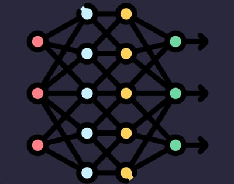

1. Core Components of Deep Learning Models
Neurons
Neurons are the fundamental units of a neural network. Each neuron processes input data and passes it on to the next layer. Think of neurons as decision-making units that take data, apply an activation function, and produce an output. A neural network can have many layers of neurons to learn complex patterns in the data.
Layers
Neural networks consist of different layers:
- Input Layer: The first layer that receives raw data.
- Hidden Layers: Layers where data is transformed through neurons, extracting features and patterns from the input data. Deep learning models typically have multiple hidden layers, which is why they are called "deep" networks.
- Output Layer: The final layer that produces predictions or classifications based on the learned data representations.

Activation Functions
Activation functions are used to introduce non-linearity into the network. Without activation functions, neural networks would only be able to solve linear problems. Some common activation functions include:
- ReLU (Rectified Linear Unit): Outputs zero for negative inputs and the same value for positive inputs. This helps the network learn non-linear patterns.
- Sigmoid: Maps the input values to a range between 0 and 1, often used for binary classification problems.
- Tanh: Similar to sigmoid but outputs values between -1 and 1, helping with faster convergence in some networks.
Backpropagation
Backpropagation is the method used to train a neural network. It involves calculating the
error at the output and then propagating that error back through the network to update
the weights of each neuron. The error is minimized through optimization algorithms like
gradient descent to adjust the model parameters for better performance.
Optimizers
Optimizers help minimize the loss function and adjust the weights of the network during training. Common optimizers include:
- Gradient Descent: The basic optimization algorithm, which adjusts weights in the direction of the negative gradient to minimize loss.
- Adam: A more advanced optimizer that adapts the learning rate for each parameter, often used for deep learning models.
Loss Function
The loss function measures how well the model's predictions match the actual data. The goal is to minimize the loss function during training. Examples of loss functions include:
- Mean Squared Error (MSE): Used for regression tasks, measuring the squared difference between predicted and actual values.
- Cross-Entropy Loss: Used for classification tasks, measuring the difference between the predicted probability distribution and the true distribution.
2. Feedforward Neural Network
What is a Feedforward Neural Network?
A Feedforward Neural Network (FNN) is one of the simplest types of artificial neural networks. In an FNN, information flows in one direction—from the input layer, through hidden layers, and to the output layer.There are no cycles or loops in the network, which means data only travels forward without returning to any previous layers.
Architecture of FNN
The architecture of a Feedforward Neural Network typically consists of three main components:
- Input Layer: The input layer receives the raw data. Each node in this layer represents a feature in the input dataset.
- Hidden Layers: The hidden layers perform the computation by processing the data and passing the output to the next layer. These layers apply activation functions to introduce non-linearity.
- Output Layer: The output layer produces the result of the network, such as a classification label or continuous value. It interprets the final transformed data from the hidden layers.
FNNs are fully connected, meaning each neuron in one layer is connected to every neuron in the next layer.
How FNN Works
Here's a step-by-step breakdown of how information flows through a Feedforward Neural Network:
- Input Layer: Data is input into the network through the input layer. For instance, in image classification, the raw pixel values are fed into the network.
- Processing in Hidden Layers: The input data is passed to the first hidden layer, where each neuron computes a weighted sum of the inputs and applies an activation function (such as ReLU or Sigmoid).
- Forward Propagation: The data flows through the next layers, where the same process is repeated, with each layer learning different features or patterns from the input data.
- Output Layer: After the data has passed through all hidden layers, the output layer provides the final prediction or classification.
Activation Functions in FNN
Activation functions are crucial in a Feedforward Neural Network because they introduce non-linearity into the model, enabling it to learn complex patterns. Common activation functions include:
- ReLU (Rectified Linear Unit): The most widely used activation function. ReLU outputs zero for any negative value and the positive value itself for positive inputs.
- Sigmoid: Maps values between 0 and 1, making it ideal for binary classification tasks.
- Tanh: Similar to Sigmoid but outputs values between -1 and 1, which can help with faster convergence in some cases.
Training a Feedforward Neural Network
Training an FNN involves adjusting the weights of the connections between neurons to minimize the error (loss) between the predicted and actual outputs. The training process includes:
- Forward Pass: The input is passed through the network to generate predictions.
- Loss Calculation: The difference between the predicted output and the true label is calculated using a loss function (e.g., Mean Squared Error for regression or Cross-Entropy for classification).
- Backpropagation: The error is propagated backward through the network, and weights are updated using optimization algorithms like gradient descent to minimize the loss.
Advantages of Feedforward Neural Networks
FNNs have several advantages, including:
- Simplicity: FNNs are relatively simple compared to more complex architectures like CNNs or RNNs, making them easier to implement and understand.
- Versatility: FNNs can be applied to a wide range of problems, from classification tasks to regression and even function approximation.
Limitations of Feedforward Neural Networks
Despite their advantages, FNNs have some limitations:
- Limited Memory: FNNs do not retain any memory of previous inputs, making them unsuitable for sequential data like time series or natural language.
- Shallow Networks: FNNs may struggle with complex data requiring deep hierarchies of features, as they only contain a fixed number of layers.
3. Convolutional Neural Networks
What is a Convolutional Neural Network?
A Convolutional Neural Network (CNN) is a deep learning algorithm designed for processing structured grid data, such as images. It is inspired by the visual perception mechanism in humans and animals. CNNs use a mathematical operation called convolution, which allows them to detect features like edges, shapes, and textures in the input data.
Key Components of CNN
CNNs are composed of several key components that allow them to efficiently learn features from data. These components include:
- Convolutional Layers: The core building block of CNNs. These layers use filters (kernels) to convolve over the input data, detecting specific features like edges and textures.
- Activation Function: Usually a ReLU function is applied after the convolution to introduce non-linearity into the network.
- Pooling Layers: These layers reduce the spatial dimensions of the data, helping to minimize computational complexity and prevent overfitting.
- Fully Connected Layers: After several convolution and pooling layers, the data is passed through fully connected layers to make the final prediction.
How Convolutional Layers Work
The convolutional layer applies multiple filters to the input data. Each filter performs a sliding window operation (convolution) over the input image, extracting various features like edges, corners, and textures. These extracted features are then passed to the next layer, where they are processed further. The output of the convolution is typically passed through a nonlinear activation function, such as ReLU.
Pooling in CNN
Pooling is a technique used in CNNs to reduce the dimensionality of feature maps, which helps to lower computational costs and prevent overfitting. The two most common types of pooling are:
- Max Pooling: Involves selecting the maximum value from a group of pixels, reducing the dimensionality while retaining the most important features.
- Average Pooling: Involves taking the average value from a group of pixels, which can help reduce noise.
Pooling layers typically follow convolutional layers to further abstract and simplify the extracted features.
Fully Connected Layers
After the convolution and pooling layers, the resulting feature maps are flattened into a single vector and passed through one or more fully connected layers. These layers are standard neural network layers that connect every neuron in one layer to every neuron in the next. The fully connected layers use the learned features to make final decisions, such as classifying an image or making a prediction.
Training a CNN
Training a Convolutional Neural Network follows a similar process to other neural networks:
- Forward Pass: The input data is passed through the network, undergoing multiple convolutions, activations, and pooling operations to extract features and produce predictions.
- Loss Calculation: The difference between the predicted output and the true labels is calculated using a loss function (e.g., Cross-Entropy for classification tasks).
- Backpropagation: The error is propagated back through the network, and weights of the filters and fully connected layers are updated using optimization algorithms like gradient descent.
Advantages of CNNs
Convolutional Neural Networks offer several advantages, particularly when working with image data:
- Efficient Feature Extraction: CNNs automatically detect relevant features from the data, eliminating the need for manual feature engineering.
- Translation Invariance: CNNs are effective at recognizing patterns in images regardless of their position within the image.
- Parameter Sharing: Filters are shared across the entire input, which reduces the number of parameters, improving efficiency and reducing overfitting.
Applications of CNN
CNNs have achieved state-of-the-art performance in various domains, including:
- Image Classification: Recognizing objects in images (e.g., recognizing animals or identifying traffic signs).
- Object Detection: Detecting and localizing objects within an image (e.g., face detection, vehicle detection).
- Image Segmentation: Dividing an image into regions and labeling each region (e.g., medical image segmentation).
- Video Analysis: Applying CNNs to video data for action recognition or event detection.
Limitations of CNNs
Despite their strengths, CNNs have some limitations:
- Large Data Requirements: CNNs require large datasets to train effectively, particularly for complex tasks like object detection.
- High Computational Cost: Training CNNs can be resource-intensive, requiring powerful hardware such as GPUs.
- Difficulty with Small or Unstructured Data: CNNs may not perform well on small datasets or on unstructured data like text or sequential data.
4. Recurrent Neural Network
What is a Recurrent Neural Network?
A Recurrent Neural Network (RNN) is a type of neural network designed to recognize patterns in sequences of data, such as time series data or natural language. Unlike traditional neural networks, RNNs have connections that form cycles in the network, allowing them to maintain a memory of previous inputs. This makes RNNs particularly suitable for tasks involving sequential data.
Key Components of RNN
RNNs are composed of several key components that allow them to process sequential data:
- Input Layer: The input layer receives the data at each time step in the sequence.
- Recurrent Layer: This layer stores the hidden state, which captures information from previous time steps and is used to predict the output at the current time step.
- Output Layer: The output layer produces predictions based on the current input and the hidden state.
How RNNs Work
RNNs process sequential data by maintaining a hidden state that is updated at each time step. This hidden state is a summary of the information from previous time steps, allowing the network to "remember" previous inputs. The hidden state at each time step is passed to the next step, along with the new input. This process continues until the end of the sequence is reached, at which point the final output is produced.
Challenges of Training RNNs
Training RNNs can be challenging due to issues such as:
- Vanishing Gradient Problem: During backpropagation, the gradients of the network's parameters can shrink, making it difficult to learn long-term dependencies in the data.
- Exploding Gradient Problem: The gradients can also grow too large, causing the network's weights to become unstable during training.
To address these issues, techniques like gradient clipping and the use of specialized RNN architectures, such as Long Short-Term Memory (LSTM) networks, are employed.
Applications of RNN
RNNs are used in a variety of sequential data tasks, including:
- Speech Recognition: RNNs can be used to process audio data and convert it into text.
- Natural Language Processing (NLP): RNNs are commonly used for language modeling, machine translation, and text generation tasks.
- Time Series Prediction: RNNs are used to predict future values in time series data, such as stock prices or weather patterns.
Variants of RNN
There are several variations of RNNs that address some of the challenges associated with standard RNNs:
- Long Short-Term Memory (LSTM): LSTM networks are designed to overcome the vanishing gradient problem by using a more complex structure for the hidden state, which allows them to retain information over longer sequences.
- Gated Recurrent Unit (GRU): GRUs are a simpler variant of LSTMs, with fewer parameters, but still capable of capturing long-term dependencies in sequential data.
Advantages of RNNs
RNNs offer several advantages, particularly when dealing with sequential data:
- Memory of Previous Inputs: RNNs can maintain information over time, allowing them to model dependencies in sequential data.
- Flexible Input and Output Sizes: RNNs can handle inputs and outputs of varying lengths, making them suitable for tasks like language modeling and sequence prediction.
Limitations of RNNs
Despite their advantages, RNNs have limitations, including:
- Difficulty in Learning Long-Term Dependencies: Standard RNNs can struggle to learn long-term dependencies due to the vanishing gradient problem.
- Computational Complexity: RNNs can be computationally expensive, especially when dealing with long sequences.
5. Challenges and Limitations of Deep Learning
1. Data Requirements
Deep learning models require large amounts of labeled data to achieve good performance. Without enough data, models can struggle to generalize and might underperform on unseen data. This can be particularly problematic when dealing with domains where labeled data is scarce or expensive to obtain.
Solution: Techniques like data augmentation, transfer learning, and semi-supervised learning can help overcome the need for massive labeled datasets.
2. Computational Power
Training deep learning models, especially large ones, requires significant computational resources, including powerful GPUs or TPUs. This can be a barrier for smaller organizations or individuals with limited access to such hardware. Additionally, deep learning models tend to be very resource-intensive during both training and inference.
Solution: Cloud computing services like Google Cloud, AWS, and Microsoft Azure provide access to powerful hardware, allowing even those without personal GPUs to train large models. Efficient model architectures like MobileNets and pruning techniques can also reduce computational demands.
3. Overfitting
Deep learning models, due to their high capacity, are prone to overfitting, especially when trained on small or noisy datasets. This occurs when the model learns not only the underlying patterns but also the noise or irrelevant details in the data, which leads to poor generalization to new, unseen data.
Solution: Regularization techniques such as dropout, early stopping, and data augmentation, as well as using simpler models or cross-validation, can help reduce overfitting.
4. Interpretability
One of the most significant challenges with deep learning models is their "black-box" nature. These models, especially deep neural networks, are highly complex and difficult to interpret, making it hard to understand how they arrive at specific predictions. This lack of transparency can be a problem in sensitive domains like healthcare, finance, and autonomous driving.
Solution: Research into explainable AI (XAI) methods is ongoing. Techniques like saliency maps, SHAP values, and LIME (Local Interpretable Model-agnostic Explanations) are designed to help interpret the decisions of deep learning models.
5. Data Bias and Ethical Concerns
Deep learning models can inherit biases present in the data they are trained on. If the data contains biases (e.g., gender, racial, or age biases), the model may learn and perpetuate those biases, which could lead to unfair or unethical decisions. This is especially concerning in high-stakes areas like hiring, lending, and criminal justice.
Solution: Careful data collection, de-biasing techniques, and ensuring diversity in the training datasets can help mitigate the risk of bias. Ethical AI development practices should also be a priority.
6. Lack of Generalization
Deep learning models may perform excellently on specific tasks for which they are trained but may fail to generalize well to other, slightly different tasks. This lack of generalization can be a significant limitation in applications where adaptability to new or changing data is essential.
Solution: Approaches like transfer learning, multi-task learning, and meta-learning aim to improve a model's ability to generalize across different tasks or datasets.
7. Training Time and Cost
Training deep learning models can take a long time, especially for complex networks or large datasets. This not only consumes computational resources but also increases the cost and time needed for deployment. Long training times can be a significant barrier to research and development in some fields.
Solution: Model optimization techniques, such as using smaller architectures, gradient-based optimization, or pre-trained models, can reduce training time. Parallel computing and distributed training can also help speed up the process.